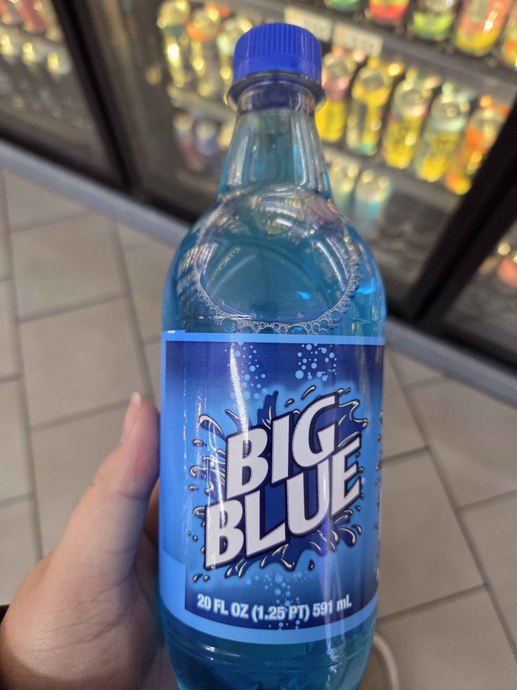
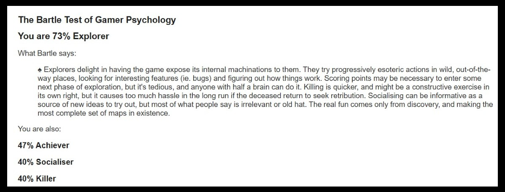
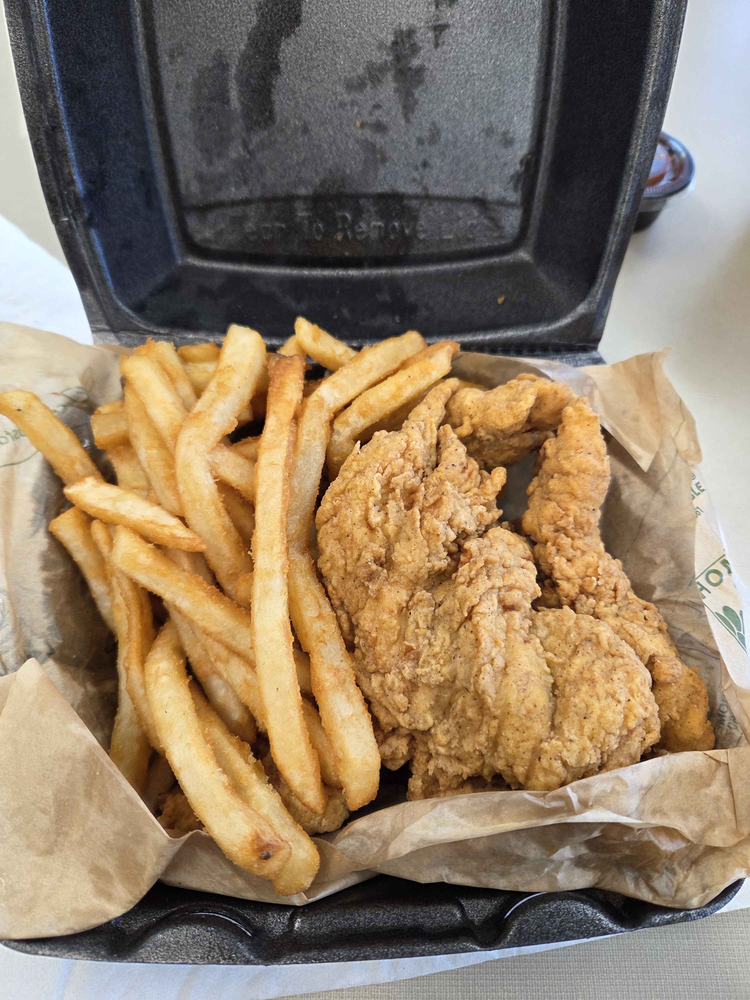
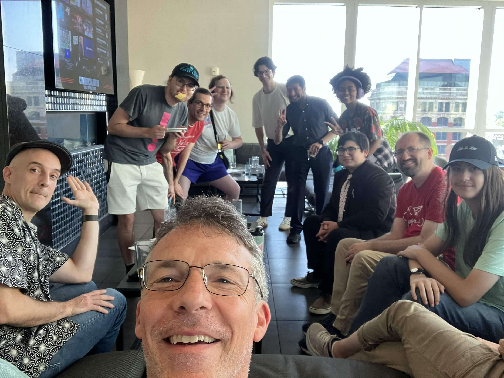

I found out about the Vector Narrative Games Festival through the nonprofit group Louisville Makes Games. The festival (more of a conference) was in Lexington, which isn’t too far from Louisville, so I made the hour drive to the Lexington Public Library. On my way, I stopped at a FiveStar convenience store to grab a drink to help me stay awake. I found this Big Blue drink (a variant of the Big Red drink brand), and bought it because it was cheaper than some of the other sodas and I was curious about its taste. I arrived at the Lexington Public Library around 9:40 am, registered, briefly looked at the games on display, and went to the library’s Farish Theater to attend the morning speakers.

Speakers
Jake Elliott: Poems & Puzzles
Jake’s talk was probably my favorite one of the entire conference. Poetry was a field I explored for a while during my senior year of high school; however my experience with it was disconnected from my overall journey in game development. Jake’s talk was very enlightening, as he made points and connections across the 2 mediums that I hadn’t ever thought of connecting, showing me a different perspective on how these mediums of storytelling can overlap. The one that stuck with me the most was his approach of “Reviving a ‘Dead’ Metaphor”, by injecting tension (the contrast between the things being compared) back into the metaphor in a new way. In games, this can be achieved by taking a mechanic or aspect that players “overlook” because it’s used so much and bringing attention to it by subverting the way it’s used. He also talked about the approach of “Paradox”, which is having opposing rules that are both technically true and achievable to solve the puzzle at hand. He believes that “Good puzzles seem impossible at first and are solved by deepening your understanding”, which is an idea I tend to use in my games’ designs.
Pang Hartman: Game Writing Toolbox
Pang’s talk was also pretty good, but it didn’t connect with me as much as Jake’s did. Her talk was more focused on the literary tools available for storytelling, such the 3 Act Structure, Hero’s Journey, Emotive Design, Emergent Design, and Pacing. Some of the tools I was already familiar with (such as the 3 Act Structure and Hero’s Journey), but Emotive Design gave a name to a concept I already knew and Emergent Design was a brand new concept to me. She didn’t have enough time to talk about it, but encouraged us to do some extra reading on topics such as Worldbuilding, Environmental Storytelling, and The Bartle Test. I had never heard of the Bartle Test, so after some research, I discovered that it is a way to classify players based on player types Richard Bartle identified in his paper Hearts, Clubs, Diamonds, Spades: Players Who Suit MUDs. I took the test myself and my result is shown below. If you’re interested, you can take The Bartle Test here.

John Meister, Jake Elliott, & Pang Hartman: Technologies and Techniques Panel
This one, while possibly being helpful in the long run, was probably the “worst” talk at the conference in my opinion. Most of the talk was about covering accessible (non code-heavy) tools one could use to create narratives for games. However, the information felt very “rapid-fire”, as they would only spend a minute or two talking about a tool before moving on to the next one. In my opinion, Jake and Pang weren’t given enough time to talk about why you’d want to use one tool over another, and they had pretty similar things to say about each tool. Twine and Inform7 had their own dedicated workshops, so I was able to get more hands-on experience with them and better understand how I could use them in my game development, but not for any of the other tools. For someone who has no prior experience writing stories for games, they may take more away from this talk (as they’re discovering a toolbox of brand new tools they could use), but since I’m comfortable in the tools I’ve been using and only got deeper experience with 2 of the tools brought up, I didn’t take much away from it.
Lunch
I walked to Modern Pantry a couple blocks away to grab lunch. Modern Pantry is basically a convenience store that serves made-to-order food. I ordered chicken tenders and fries, and while waiting for my food, I struck up a conversation with one of the attendants of the conference. After we both received our food, we walked back to the library where I went inside to eat and he stayed outside to enjoy the air and the sounds of the other events nearby. The fries were double battered, so their texture was very crispy, but weren’t very hot (of course they probably cooled during the walk back, so I’m not holding that against them). My standard to enjoy fries is that either they are crispy or hot, and if they’re both, then I will really enjoy them, so these ones were still good in my book. However, the chicken was really good. They were very tender (pun intended) and were the type of chicken tenders you would receive at a food truck or fair stall. I also paid for 3 pieces, but they ended up giving me about 5. I only ate about 3 of them before the workshops started, so I had to finish the others after the Twine workshop.

Workshops
The workshops were centered around teaching the tools Twine and Inform7. Twine is a pretty simple and accessible way for people who aren’t comfortable with code to write narrative stories for games (almost like a very stripped down visual novel), while Inform7 is a way to create text-based adventure games using plain English. Because Inform7 uses plain English and doesn’t have any “traditional” syntax, it can be pretty confusing to use due to the things that are hardcoded in the program. It feels like a tool that seems to be more trouble than it’s worth, but my mind might change the more I use it. These tools might be something I use in a game jam, as I don’t see myself creating standalone games with them (more so prototyping stories to insert into bigger projects). However, I might teach Twine to students at Randolph College as part of the Video Game Development Workshops series I used to run before I graduated.
After Party
The “After Party” for the conference was held at the Infinity: Rooftop Restaurant + Bar. I usually don’t attend social gatherings like these at conferences, but I decided to go to this one since it would be easier to connect with people there (unlike my other conference experiences that had people from different disciplines). I ended up staying for around 2 hours, striking up conversations with people whom I didn’t have a chance to meet during the conference proper. I agreed to help someone work on their game called Fablelight (which was also exhibited at the conference), since I was one of the only few people who had experience with GameMaker Studio, the engine the game was being made in. I always feel like these events are the ones most pivotal towards getting the “soft skill” benefits of conferences (since it’s easier to talk and meet with different people in an unstructured environment compared to a conference’s concrete schedule), and these are the sorts of experiences that one misses out on when they attend conferences virtually. Because of that, I try to attend conferences in-person if I am able, but attending them virtually is better than not attending at all.
Closing Thoughts
This year’s Narrative Games Festival was the first conference that RunJumpDev (the game developer nonprofit of Lexington) put on in over 5 years. As a “return to form” conference, it was pretty good overall. I feel that I learned some unique tools that I could teach to others who are looking to get into game development, and I made some pretty useful connections. This was the first video game centered conference I’ve attended in my academic career, and it was everything I wanted it to be. Since it was only an hour away, was an all-day affair, and was free, it felt like a perfect “entry level” conference to attend before seeking out and attending much larger conferences, which I plan to do. Conferences like these are also great ways to get my name and brand out to other people in the gaming industry, potentially planting the seed for future opportunities.
